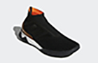
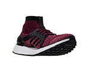
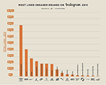
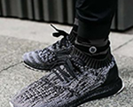

Limited Edition
You claim the streets. You create the hype. You turn stadium style into street style with Predator Tango, because you know the show isn't over after the game is played. These football trainers have an adidas Primeknit upper and an engineered Sockfit collar. Boost in the midsole gives a responsive, energised feel.
| Headphones | Monster | Blue | $99.99 |
|---|---|---|---|
| Gifts | Shoes | Red | $49.99 |
| Likes | Left Nike | 2015 | $Billion |
| Reviews | Satisfaction | Fast | $10 |
 Over-the-ear design With comfortable ear cushions allows use during long trips and other extended listening sessions. Advanced noise isolation Helps minimize ambient sound for crystal-clear, immersive audio. Apple ControlTalk cable Allows use with compatible Apple audio devices and features a tangle-free design for neat storage. Folding design Along with an included carrying pouch makes it easy to take the headphones with you on the go. Dual-port inputs Enable you to share audio with up to 5 additional pairs of headphones (not included). Apple, the Apple logo and iTunes are trademarks of Apple Computer, Inc., registered in the U.S. and other countries. iPod is a trademark of Apple Computer, Inc.
Over-the-ear design With comfortable ear cushions allows use during long trips and other extended listening sessions. Advanced noise isolation Helps minimize ambient sound for crystal-clear, immersive audio. Apple ControlTalk cable Allows use with compatible Apple audio devices and features a tangle-free design for neat storage. Folding design Along with an included carrying pouch makes it easy to take the headphones with you on the go. Dual-port inputs Enable you to share audio with up to 5 additional pairs of headphones (not included). Apple, the Apple logo and iTunes are trademarks of Apple Computer, Inc., registered in the U.S. and other countries. iPod is a trademark of Apple Computer, Inc.
Over-the-ear design With comfortable ear cushions allows use during long trips and other extended listening sessions. Advanced noise isolation Helps minimize ambient sound for crystal-clear, immersive audio. Apple ControlTalk cable Allows use with compatible Apple audio devices and features a tangle-free design for neat storage. Folding design Along with an included carrying pouch makes it easy to take the headphones with you on the go. Dual-port inputs Enable you to share audio with up to 5 additional pairs of headphones (not included). Apple, the Apple logo and iTunes are trademarks of Apple Computer, Inc., registered in the U.S. and other countries. iPod is a trademark of Apple Computer, Inc.
Chase down PRs no matter what Mother Nature has up her sleeve in the adidas UltraBOOST X ATR Running Shoes. Foot-cradling water repellent Primeknit upper delivers breathability and comfort; high collar for added protection Plush BOOST foam cushioning for maximum energy return and a cloud-like running feel Floating arch offers personalized, gender-specific response to the way you move All-terrain grid-like outsole for grip in a variety of conditions Flexible STRETCHWEB rubber outsole Neutral running sneaker The adidas UltraBOOST X ATR is imported. Featuring a women's-specific fit and cloud-like BOOST cushioning, these innovative runners are sure to become your favorite training partner. Now upgraded for all conditions and terrains, the ATR model lets you take the path less traveled.
{kind=link}
This year was an amazing year for sneakers, if Instagram is any indication. British-based graphic designer Dan Freebairn, who posts his artistic renditions of popular sneakers on his Instagram account, @KickPosters, decided to see just how amazing it was. He dug into the numbers, and it turns out the most popular sneaker brand by sales, Nike, can't keep up with its European rival on Instagram.Adidas racked up 78.8 million likes on its account, @adidasoriginals, likely due to the insane popularity of its Yeezy Boost collaboration with Kanye West. Nike, even across its @nike, @nikesportswear, and @jumpman23 (Jordan) brands, couldn't keep up with the popularity of Yeezy. The sneaker's iterations, of which six have been released so far (the most recent on December 31), have all sold out instantly and subsequently sold for thousands on Ebay. In fact, West's collaboration with Adidas is even more popular than the collaboration with Nike he did back in 2009, according to NikeKicks.com.
{kind=link}
Excellent service. I usually order my shose onine and I never had any problems. I recently got adidas all stars, can't wait for the order to be here already.
{kind=link}